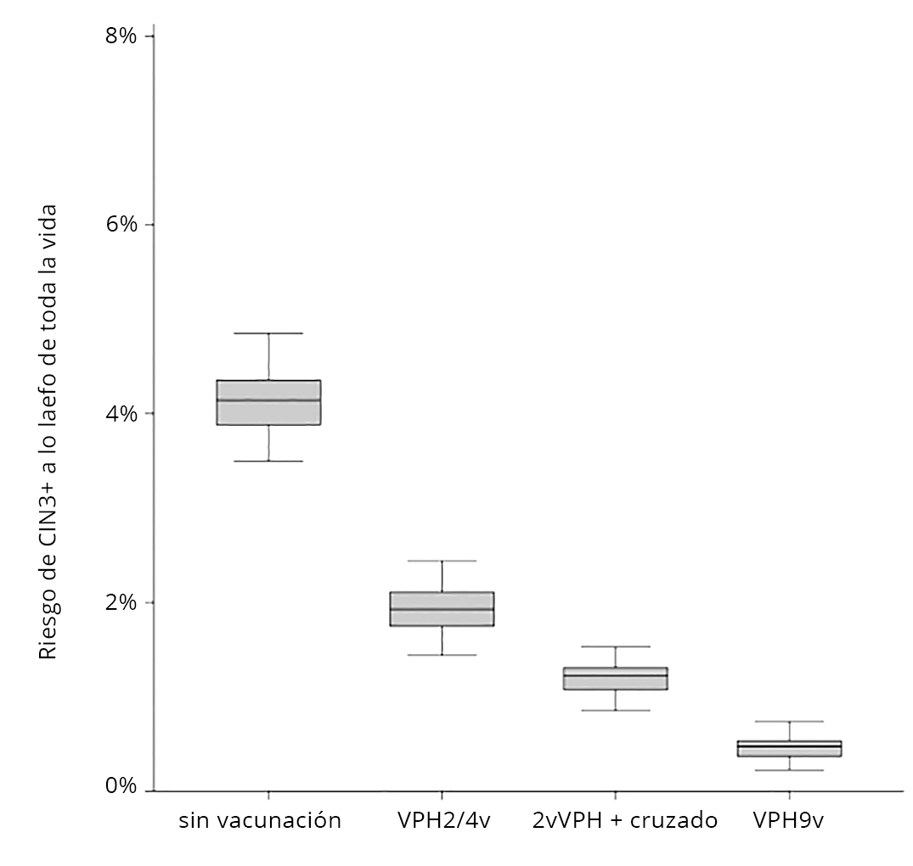
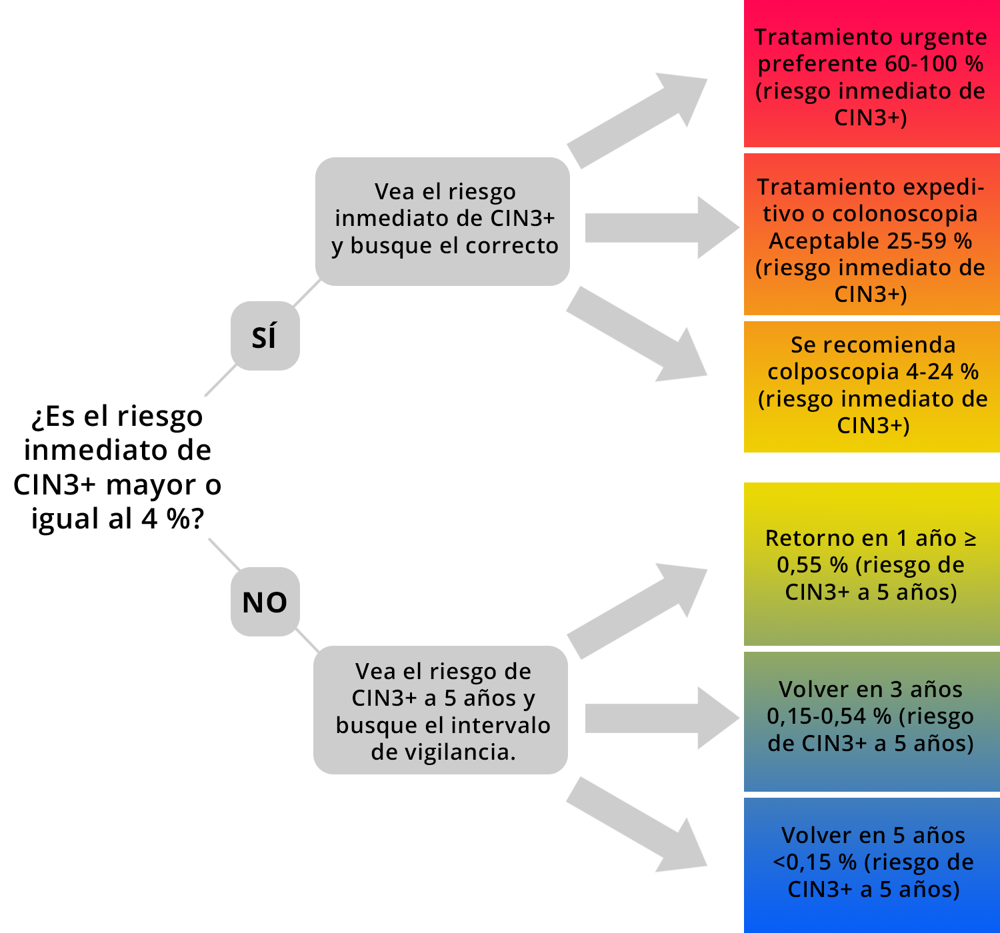

2.2 Impacto de la vacunación contra el VPH en las pruebas de cribado del cáncer de cuello uterino
El efecto observado de la vacunación contra el VPH en la incidencia de cáncer de cuello uterino (para más información, véase la Unidad 6.1) sugiere que los programas de cribado deben ser revisados y readaptados en las mujeres vacunadas, en relación a:
Las pruebas de cribado.
La edad de inicio y frecuencia del cribado.
El triaje y manejo de las lesiones.
Pruebas de cribado
La vacunación contra el VPH repercutirá en el valor predictivo positivo (VPP), la sensibilidad y la especificidad de la citología del cuello uterino para detectar lesiones precancerosas (para más información sobre la relación entre la prevalencia y los parámetros de prueas diagnósticas, véase el Módulo 1).
Los datos reales de los países en los que la vacunación se introdujo hace varios años, y que cuentan con registros de datos de alta calidad, como Australia [23], Escocia [24] y Suecia [25] han mostrado un rendimiento reducido tanto para la citología convencional como para la de base líquida.
Ejemplo
Lei et al. encontraron que el VPP de la citología para CIN2+ disminuyó entre las mujeres vacunadas, especialmente entre del 69,9 % (IC del 95 %: 67,9-71,9), 64,9 % (IC del 95 %: 59,8-69,8) y 57,4 % (IC del 95 %: 50,9-63,7) entre las mujeres no vacunadas, las vacunadas a los 17-22 años y las vacunadas antes de los 17 años, respectivamente. Estos valores de VPP representan una reducción del VPP del 8 % (IC del 95 %: 0-15 %) y del 17 % (IC del 95 %: 7-26 %) en los respectivos grupos vacunados tras el ajuste por cohorte de nacimiento [25].
Está previsto que la reducción de la prevalencia de las lesiones de cuello uterino debida a la vacunación contra el VPH también afecte al rendimiento de las pruebas del VPH [26]. Además, la disminución de la prevalencia de la infección por el VPH 16 y/o 18 entre las mujeres vacunadas ha dado lugar a un aumento de la proporción relativa de infecciones por el VPH no 16/18 que tienen un menor riesgo de progresión (falsos positivos).
En cuanto al efecto de la prevalencia de la enfermedad en el rendimiento de la prueba del VPH, Franco et al. [27] han estimado que se producirá un rápido aumento de las tasas de falsos positivos tras alcanzar un umbral crítico del 0,2 % en la prevalencia de las lesiones precursoras de cuello uterino. Para más información, véase también Giogi-Rossi et al. [28].
En general, habrá una menor prevalencia de infecciones por VPH de alto riesgo en las mujeres vacunadas, y la detección de éstas diferirá en función de los tipos de VPH que puedan detectarse mediante los ensayos clínicamente validados. Surgirán debido al desenmascaramiento de otros tipos de VPH y/o a la dominancia de otros tipos de VPH de alto riesgo, y es probable que representen infecciones por tipos de VPH que probablemente no progresen (falsos positivos). Esto afectará a los programas de cribado basados tanto en la detección del VPH como los basados en la citología.
A pesar de ello, la mayor sensibilidad de la prueba del VPH hace que siga siendo la prueba principal de elección para el cribado del cáncer de cuello uterino en las mujeres vacunadas, con lo que las pruebas con alta especificidad se reservan para el triaje de las mujeres positivas al VPH. Además, en un futuro, la prueba del VPH con genotipado parcial podría tratarse deun enfoque alternativo de cribado primario para identificar a las mujeres con mayor riesgo, independientemente de su estado de vacunación [25].
Edad de inicio y frecuencia del cribado
La evaluación del riesgo de CIN3+ a lo largo de la vida es importante a la hora de evaluar las necesidades de cribado posteriores en las mujeres vacunadas en cuanto a la edad de inicio y la frecuencia del cribado.
Utilizando los datos de 44.102 mujeres holandesas que recibieron su convocatoria al cribado rutinario, Inturrisi et al. estimaron que la vacunación conducirá a un fuerte descenso del riesgo de CIN3+ a lo largo de la vida, quedando un riesgo absoluto muy bajo especialmente si la protección es de por vida y más allá de los genotipos 16 y 18 (protección cruzada). La figura 11 muestra que sin vacunación el riesgo estimado de CIN3+ a lo largo de toda la vida en mujeres negativas al VPH, sometidas a cribado primario cada 5 entre los 30 y los 60 años de edad, es del 4,1 %. El riesgo a lo largo de la vida disminuirá al 1,9 % con la vacunación bivalente/tetravalente, sin protección cruzada, y al 1,2 % (0,9-1,5) con la vacunación bivalente, con protección cruzada. Por último, bajo la vacunación nonavalente, el riesgo de CIN3+ a lo largo de toda la vida es del 0,5 % [29]. Estas reducciones en el riesgo de CIN3+ señalan una reducción en las necesidades de cribado posteriores de las mujeres vacunadas.
FIGURA 11 Efecto de la vacunación sobre el riesgo de CIN3+ a lo largo de toda la vida. Inturrisi et al. [29]
La mayoría de los datos que respaldan un cribado menos intensivo se basan en la elaboración de modelos. En varios estudios [30–34] se han evaluado la edad de inicio adecuada para el cribado del VPH (¿puede empezar más tarde?) y el intervalo de cribado adecuado (¿puede hacerse con menor frecuencia?) en las cohortes vacunadas. Los datos del modelo sugieren que se necesitan reducir las intervenciones para que el cribado del cáncer de cuello uterino en mujeres vacunadas contra el VPH siga siendo coste-efectivo.
Todavía no existe un consenso entre los profesionales, pero los programas de VPH tendrán que empezar a una edad más avanzada, por ejemplo, a los 25 o 30 años para las vacunas bivalentes o tetravalentes, y a los 35 años para la vacuna nonavalente. Además, el intervalo entre las visitas de cribado podría ampliarse a ≥10 años (de dos a cinco cribados durante toda una vida) [35].
Ejemplo
Un ensayo aleatorizado de mujeres finlandesas vacunadas contra el VPH16/18 a los 13-15 años explora la seguridad de un cribado menos frecuente del cáncer de cuello uterino en cohortes vacunadas. Las participantes fueron aleatorizadas para someterse a un cribado una vez a los 28 años o cada tres años a los 22/25/28 años. Los análisis provisionales de seguridad realizados a la edad de 25 años mostraron una incidencia baja similar de CIN3 (0,4 %) en las mujeres sometidas a cribado frecuente y en un grupo de seguridad de niñas vacunadas a la edad de 18 años, lo que sugiere que el cribado menos frecuente no compromete la seguridad en las cohortes vacunadas contra el VPH [36]. Los datos sobre la comparación de incidencia de enfermedad a los 28 años para ambos grupos de intervención estarán disponibles durante los próximos años.
Todavía no hay suficientes datos empíricos para emitir recomendaciones consensuadas entre países. Sin embargo, la adaptación de las recomendaciones de cribado es cada vez mas importante debido ala mayor reducción del riesgo de CIN3+ a lo largo de la vida.por la vacunas nonavalente y la vacuna bivalentecon su protección cruzada.
Triaje y tratamiento de las lesiones: balance entre beneficios y riesgos
La prevalencia de enfermedad significativa detectada mediante colposcopia en las mujeres vacunadas se reducirá, lo que significa que el número de mujeres que necesitarán ser derivadas para poder detectar un caso de CIN2+ aumentará significativamente [24]. Las recomendaciones sobre el triaje (es decir, qué subgrupo debe ser remitido a colposcopia) de las mujeres positivas para VPH tendrán que cambiar para las mujeres vacunadas con el fin de equilibrar mejor los beneficios con los daños y garantizar que las mujeres jóvenes con infecciones activas destinadas a remitir de forma natural no sean derivadas a colposcopia y tratadas innecesariamente. Las opciones de triaje disponibles se detallan en el Módulo 5.
Es poco probable que las anomalías citológicas de bajo grado entre las mujeres vacunadas menores de 18 años que comienzan el cribado necesiten una colposcopia inmediata. Dado su menor riesgo, principalmente debido a la menor presencia de VPH16 y VPH18, el enfoque racional puede ser esperar a que haya constancia de anomalías citológicas persistentes (como indicador de la infección persistente por el VPH, que es la causa necesaria del cáncer de cuello uterino y está fuertemente asociada a CIN2+ y CIN3+) antes de derivar a estas mujeres jóvenes a la colposcopia [37].
En consecuencia, la Sociedad Americana de Colposcopia y Patología Cervical (ASCCP) ha publicado la cuarta directriz para el manejo de las anomalías del cribado del cáncer de cuello uterino basada en la gestión del riesgo. Esta guía se basa en el principio de "igual gestión para igual riesgo" que garantiza que se aplica el mismo tratamiento clínico para el mismo nivel de riesgo de enfermedad [38].
En lugar de considerar los resultados de las pruebas de cribado de forma aislada, las nuevas directrices utilizan los resultados actuales y previos junto con otros factores como la edad y los antecedentes de cribado para estimar el riesgo inmediato y el riesgo a cinco años de CIN3+.
FIGURA 12 Algoritmo de evaluación de riesgos. Adaptado de Perkins et al. [38]
En la figura 12 se describen las medidas clínicas basadas en el riesgo de CIN3+. Si el riesgo inmediato de CIN3+ es del 4% o superior, está indicado el manejo inmediato mediante colposcopia o tratamiento. Si el riesgo inmediato de CIN3+ es menor, se examina el riesgo de CIN3+ a 5 años para determinar si las pacientes deben volver en 1, 3 o 5 años.
En un futuro próximo, podrían estimarse riesgos inmediatos y futuros más personalizados en función de otros factores de riesgo, como el estado de vacunación y la mejora de la precisión de las pruebas del VPH, o de factores asociados a la progresión de la enfermedad, como el consumo de tabaco. Basándose en el principio de "igual gestión para igual riesgo", los nuevos riesgos estimados solo se aplicarían al manejo clínico del riesgo. Este enfoque de gestión basado en riesgos se está aplicando actualmente en Estados Unidos y puede suponer un precedente para aplicar estas estrategias en Europa.
No existen directrices de consenso para el tratamiento de las anomalías del cribado del cáncer de cuello uterino en las mujeres vacunadas contra el VPH.
¡Enhorabuena!
Has completado este módulo